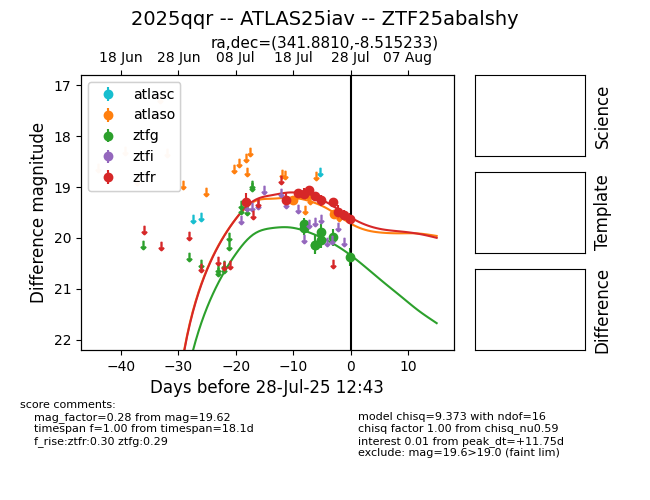

Target 2025qqr at 2025-07-28 12:43, see:
FINK: fink-portal.org/2025qqr
Lasair: lasair-ztf.lsst.ac.uk/objects/2025qqr
ALeRCE: alerce.online/object/2025qqr
TNS: wis-tns.org/object/2025qqr
YSE: ziggy.ucolick.org/yse/transient_detail/2025qqr
alt names
ZTF25abalshy (ztf,fink)
2025qqr (tns,yse)
ATLAS25iav (atlas)
coordinates:
equatorial (ra, dec) = (341.8810,-8.51523)
galactic (l, b) = (59.5266,-55.30039)
photometry
last atlaso=19.54, ztfg=20.37, ztfr=19.62
2 atlaso, 8 ztfg, 11 ztfr detections
